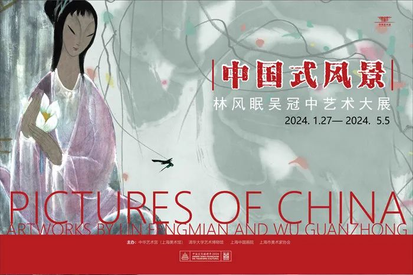

— 展览信息 —
展览地址:
上海市浦东新区上南路205号 中华艺术宫（上海美术馆）
展出时间:
周二至周日 10:00-18:00（17:00停止进馆） 周一闭馆（法定节假日除外）
Address:
205, Shangnan Rd. Pudong New District, Shanghai 200126, P.R. China
Opening Hours:
10:00-18:00 (admission stops after 17:00)